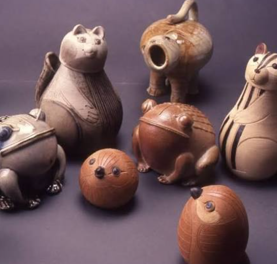
✧Descripition✧
Stoneware Cats, Frogs and Birds
This is Jyotsna Bhatt's most iconic work known as her 'Toy Series' or 'Animal Menagerie'. It includes cats, frogs, owls and squirrels made in stoneware clay. The cats are assembled from many small wheel-thrown parts joined together, not made in one piece. Each animal has a different attitude - sleeping, sitting, yawning. She made them with matte and satin-matte glazes in earthy brown and beige tones. Bhatt said she hated repeating forms, so every cat has a different personality. These are not just toys but ceramic sculptures full of humour and life, inspired by her garden in Baroda.
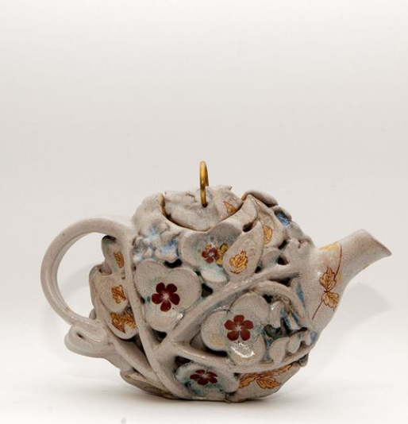
✧Descripition✧
Flower Power Series
This is her famous pierced teapot from the 'Flower Power Teapot Show'. The teapot body is completely covered with a second layer of sculpted vines, flowers and leaves that creates a net or jaali over the pot. The flowers are painted in soft pink and green glazes. The handle and spout are simple, but the body looks like a bouquet trapped in clay. Jyotsna loved to alter wheel-thrown forms by cutting, joining and twisting. Function is secondary, sculpture is primary. This work shows her skill in both utilitarian pottery and pure sculpture.
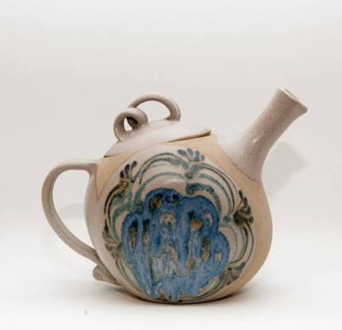
✧Descripition✧
This is another designer teapot with a bold blue and black brush-painted design on a white stoneware body. The body is round like a dome, which was her favourite form - "so round, so serious and sensuous" she said. The blue pattern looks like peacock feathers or ocean waves made with cobalt glaze. The handle is small, the spout is long and straight. It is fired in oxidation firing to get bright colours. This shows her interest in making everyday objects beautiful. She never wanted to make only showpieces, she happily made usable teapots also.
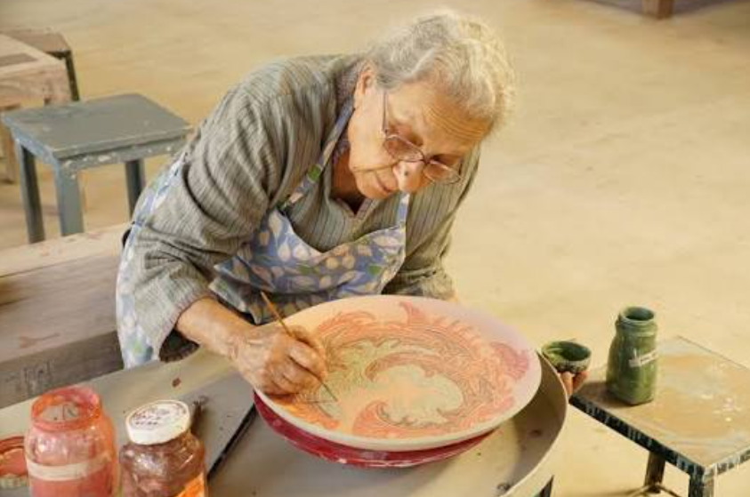
✧Descripition✧
Process Photo
This is not a sculpture but a photograph of Jyotsna Bhatt herself working in her studio in Vadodara. She is wearing an apron and carefully decorating a large red platter on the potter's wheel with a sharp tool. Around her are small glaze bowls. She taught ceramics at M.S. University Baroda from 1972 to 2002 as Head of Department. She was known as a very gentle and generous teacher who shared all her glaze recipes. This image shows her real process - small format, hands-on, deeply connected to clay. She preferred to make her own glazes from minerals.
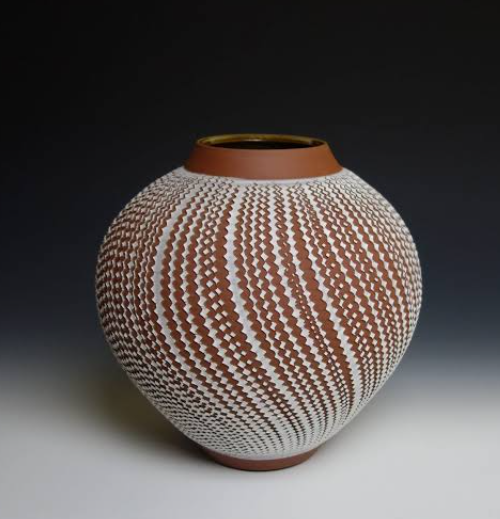
✧Descripition✧
Incised Spherical Vase
This is her signature spherical vessel with fine incised lines all over the body. The form is made on the wheel as a closed sphere, then cut and etched when leather-hard. The lines look like the cross-section of a tree trunk or the ripples of water. It is glazed in matte white over a terracotta body, so the brown clay peeks through the lines. This creates a warm, earthy effect. She loved subtle textures achieved through chemistry and firing, not loud colours. It is a perfect example of her minimalism with attention to detail.
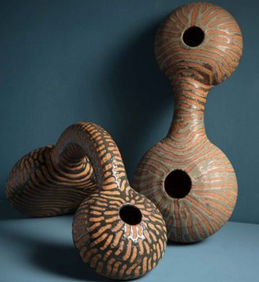
✧Descripition✧
Double-Necked Hollow Forms
This work shows two gourd or bottle-gourd shaped hollow forms with holes on top. They are made of unglazed stoneware with a natural wood-fired skin and black ash marks. The necks are long and twisted, the bellies are fat and textured with small incisions. They look like dried natural gourds but are actually ceramic. Jyotsna was inspired by nature - buds, gourds, fruits. She would stretch, slap and twist the wheel-thrown form until it satisfied her. These are purely sculptural, not functional, and show her love for organic, womb-like shapes.
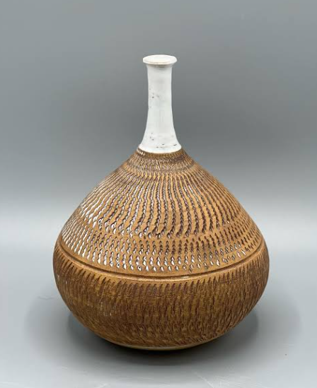
✧Descripition✧
White Neck
This is a classic Bhatt bottle vase - a large round belly with a tall narrow white porcelain neck on top. The belly has fine combed lines made with a serrated tool while the clay was rotating on the wheel. It is fired in reduction firing to get earthy brown and grey tones with a glowing aura from minerals. The contrast between the rough textured brown body and the smooth white neck is her signature style. She called such forms "serene, spherical bowl-like shapes". It looks simple but needs great control on the wheel.
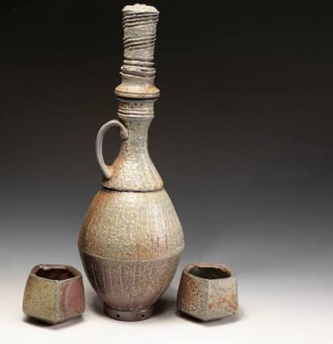
✧Descripition✧
Water Set
This is a tall surahi or ewer with two small kullhads or cups, made as a water set. The main bottle has a long neck, a small handle and a textured beige surface with a matte glaze. The cups are tiny, rough and unglazed. This set fuses traditional Indian pottery shape (surahi) with modern studio pottery aesthetics. Jyotsna respected Indian crafts but did not copy them, she modernized them. The set is small-format, as she never made very large pieces. It shows her idea that even utilitarian objects should be beautiful and sculptural.
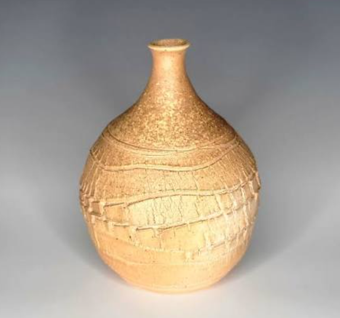
✧Descripition✧
Bud Form
This is her beautiful "Lotus Bud" or "Ovoid Bottle" form in beige stoneware. The shape is like a closed lotus bud with flame-like petals joined at the tip like folded hands. The surface is smooth but has faint horizontal bands from the wheel. It is left unglazed or with a very thin ash glaze to show the natural clay colour. Bhatt said her lotus buds are of indigenous origin, inspired by Indian nature. This form is full of silence and meditation. She made many variations of this bud in different sizes, each one slightly different.
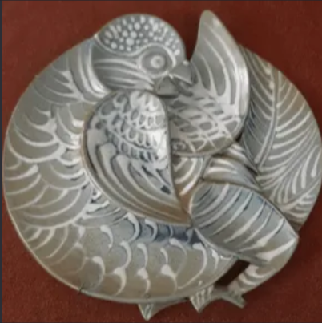
✧Descripition✧
Owl Medallion
This is a circular ceramic plate or wall medallion with two owls carved in low relief on it. The owls are huddled together, feathers detailed with fine sgraffito lines. The whole plate is glazed in glossy white with a red background behind. Owls, roosters, cats and birds were her favourite fauna. This work is more like a painting than a sculpture, as the relief is very shallow. She made such plates after doing many sketches. The owl symbolizes wisdom and is often seen in her work. The texture is soft and silken.
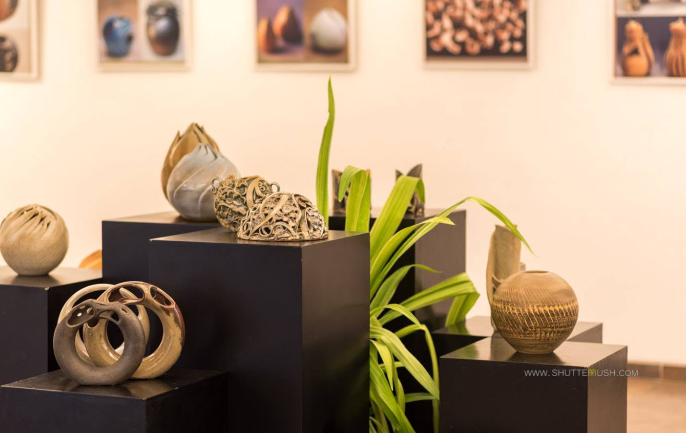
✧Descripition✧
Retrospective Display
This image shows an exhibition view of Jyotsna Bhatt's ceramics displayed on black pedestals in a gallery. We can see her pierced globes, spherical vases, cat sculptures and bud forms arranged together with a green plant. This display style shows how small her works are - all intimate, hand-held size. She never believed in grand gestures. The gallery lighting brings out the matte glazes and shadows. This photo proves she was a master of curation also, arranging her nature-inspired forms like a garden indoors. Her shows were always like a quiet earth song.
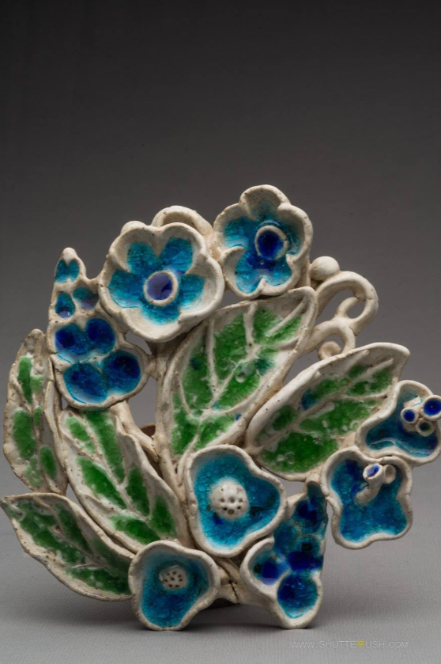
✧Descripition✧
Floral Bouquet Sculpture
This is a sculptural floral bouquet made of many small ceramic flowers and leaves clustered together. The flowers are blue and white with green leaves, glazed in bright majolica colours. Each petal is hand-modeled and then assembled to form a bouquet that looks like it was chiselled from one block. The back is hollow. Jyotsna loved to make "hollow spherical bouquets" that look like solid stone but are actually light ceramic. This work shows her housewifely instinct - making a flower pot that is itself a flower arrangement.
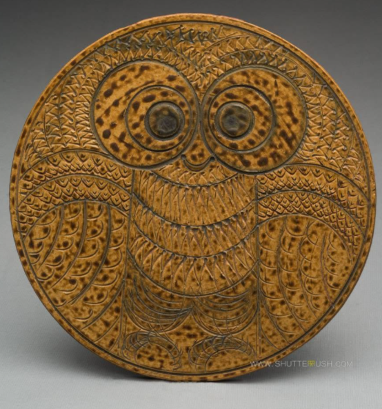
✧Descripition✧
Brown Circular Platter with Owl Motif
This is another circular platter, this time in mustard-yellow and brown, with a large owl face in the centre. The owl's big round eyes, dotted feathers and layered wings are etched with a needle tool (sgraffito). The glaze is matte and earthy with iron spots. The owl looks both comic and wise. Bhatt's animals are never theatrical or dramatic, they are summary and concise with economy of lines. This plate is 12 inches diameter and is meant to be hung on the wall. It shows her folk-art influence mixed with modern studio pottery.
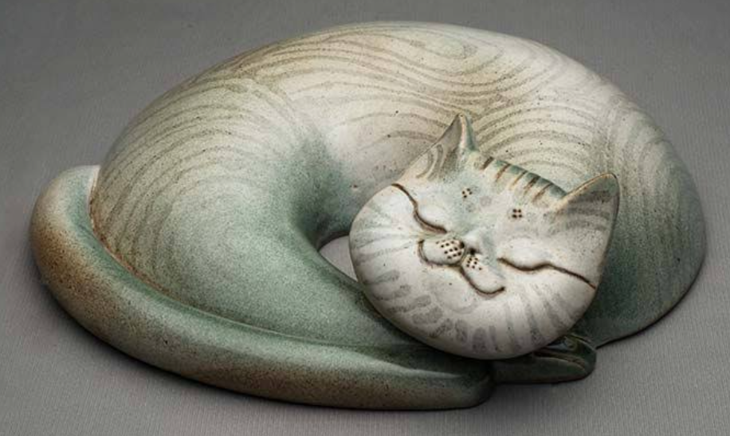
✧Descripition✧
Languorous Cat Sculpture
This is her most famous and beloved work - the sleeping cat. A fat white cat curled into a perfect round ball, tail covering its nose, sleeping peacefully. The body has fine incised lines showing fur texture, glazed in light blue and grey matte glaze with a smoky effect. The face is minimal - just eyes, nose and whiskers. Bhatt's cats are legendary; every collector wanted one. She made them by assembling many parts separately. This cat shows various attitudes of lassitude and mischief. It is robust, not fragile, though made of clay.
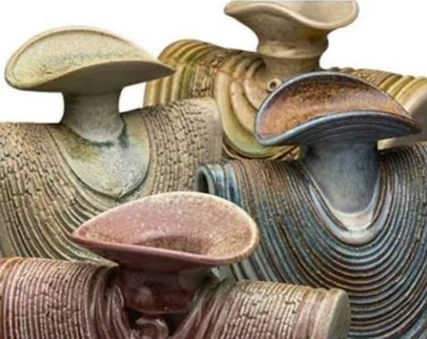
✧Descripition✧
Fungal Cluster Sculpture
This is a cluster of mushroom or toadstool-like forms grouped together. Each form has a wide flat cap on a short stem, with textured striated surfaces in pink, beige and grey glazes. They are wheel-thrown and then altered by cutting and tilting. They look like a family of mushrooms growing together. Jyotsna was inspired by small vignettes from her garden - fungi, buds, seeds. This work shows her ability to see sculpture in everyday nature. The glaze is satin-matte with mineral speckles achieved by wood firing.
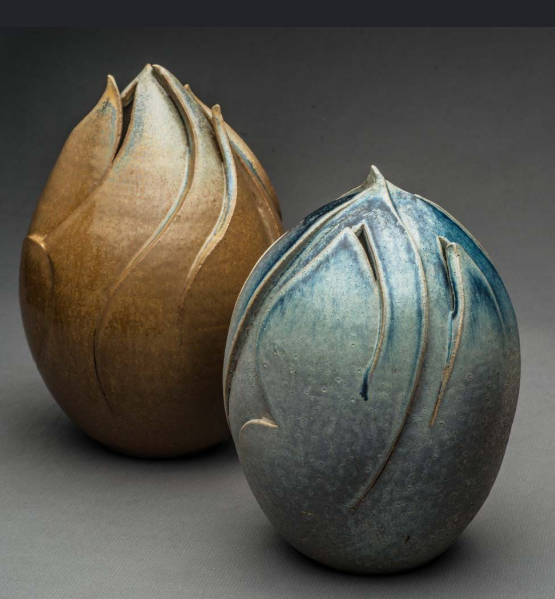
✧Descripition✧
Lotus Bud Duo
This work shows two bud-shaped vases kept together - one in mustard yellow and one in teal blue-green. They are ovoid with a pointed tip where petals join. The surface has vertical folds like a real bud about to open. The glazes are her favourite - matte, teal blue, green and earth tones. She used both oxidation and reduction firings. These buds are her most poetic work, symbolizing birth and potential. They are always small, intimate and meant to be held in hands. She never made monumental buds, only small ones with deep meaning.
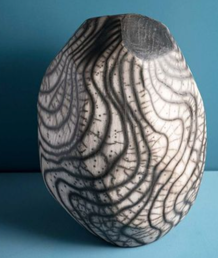
✧Descripition✧
Agateware Style
This is a tall ovoid vase with a dramatic black and white marbled or agateware pattern that looks like wood grain or water waves. The pattern is made by mixing two different coloured clays together on the wheel, then cutting to reveal the pattern. It is glazed with a clear matte glaze to protect the pattern. The form is simple but the surface is very complex and bold. This shows Jyotsna's experimentation with clay body itself, not just glaze. She called such effects "judicious accidents from long practice".
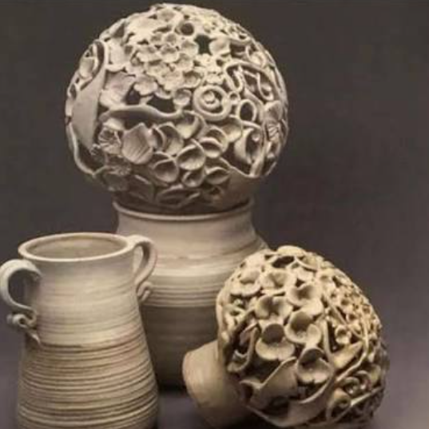
✧Descripition✧
Jaali Work
This set includes two pierced spherical forms with intricate jaali or net work and a small jug. The spheres are hollow and the surface is completely cut with organic holes and lace-like patterns, so light passes through. They look like they were chiselled from stone. The small jug is simple and utilitarian. The pierced work is very difficult as the clay can collapse. Jyotsna mastered it by making the walls thick first, then cutting when leather-hard. This work shows her patience and precision.
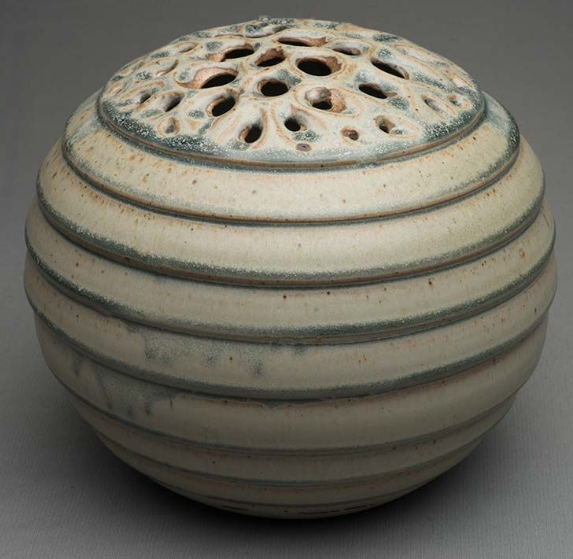
✧Descripition✧
Incense Holder
This is a round lidded box with many small holes on the lid, used as an incense holder or potpourri box. The body has horizontal incised bands in beige and grey. The lid has a net of small perforations allowing smoke or fragrance to escape. It is made in stoneware with a satin-matte glaze. The form is serene and spherical, like a beehive. Jyotsna loved making small useful objects and did not mind being called a potter. This box is both functional and sculptural, showing her philosophy that craft and art are one.
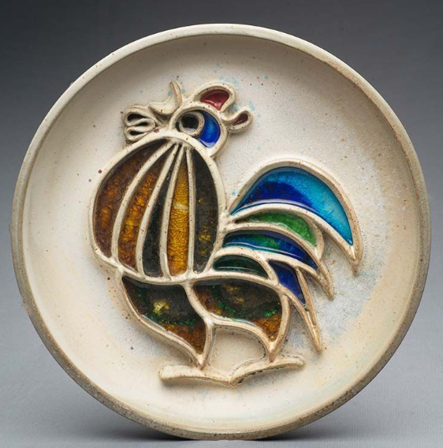
✧Descripition✧
Crowing Cock Platter
This is a white circular platter with a colourful rooster or cock painted in the centre in sgraffito and inlay technique. The rooster has a red comb, blue and green tail feathers and a brown body with bold black outlines. It looks like it is crowing. The style is flat like a folk painting but made in ceramic. Jyotsna's roosters, owls and small birds are inspired by Indian folk toys and Western studio pottery both. The plate is glazed in white with bright colours only on the bird. It is cheerful and full of life.